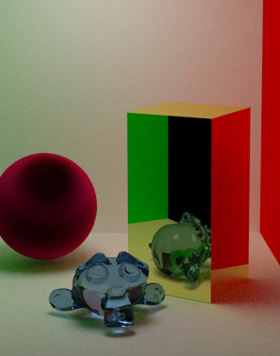
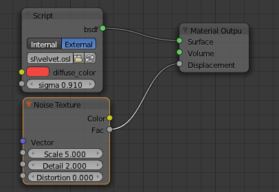
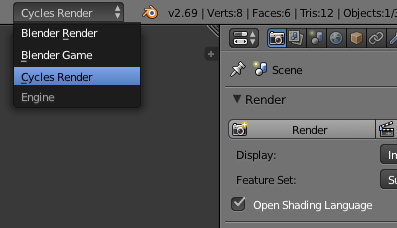
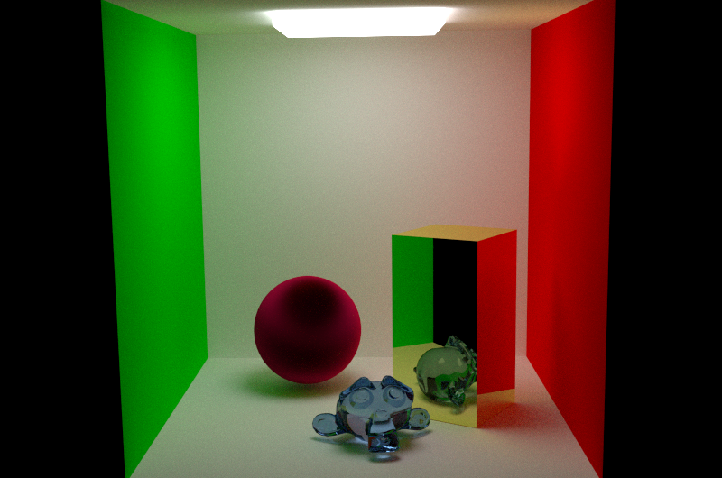

I have recently come to know the Open Shading Language project by Sony ImageWorks. For those, like me, that are enthused by computer graphics it is a great possibility to taste a professional shading language without the need to buy expensive software such as Pixar's RenderMan. The Open Shading Language (OSL from now on for sake of brevity) is a open-source implementation of a shading language for photorealistic image production. It is currently in use at ImageWorks and it has been used for many of their award-winning production. It sounds a little bit cheesy but truly, if you ever experienced shader programming at any level you will love it. As the development of the Open Shading Language is ongoing, by the time you read this article the informations contained here may not be valid anymore. Please refer to the latest documentation in order to port the shaders contained here to newer language versions.
Designers of OSL has, IMHO, as their main source of inspiration the RenderMan shading language. Begin probably the first (this is for sure, it is the first shading language at all) and most used shading language for off-line production, OSL takes lot of inspiration from Pixar's counterpart. We find four different types of shaders (text in italic is extracted from the OSL specification):
surface shaders. Surface shaders determine the basic material properties
of a surface and how it reacts to light. They are responsible for computing the color
(a color closure, we will see this in detail) of the material. If you have experience with
RenderMan you know what I am talking about, if you come from a GLSL or HLSL background these
type of shaders are something to fragment/pixel shader programs in those frameworks. These
programs calculate the reaction of a surface to a given light stimuli.
displacement shaders. Displacement shaders alter the position and
shading normal (or, optionally, just the shading normal) to make a piece of geometry appear
deformed, wrinkled, or bumpy. So far so good, the OSL specification explanation is pretty
self-explanatory. In common GPU programming these are called vertex shaders and has exactly
the same purpose (more or less). These are the only shader that can manipulate the geometry
and this is exactly their purpose, if you want to implement bump mapping this is the shader
type you want to use.
volume shaders. Volume shaders describe how a participating medium
(air, smoke, glass, etc.) reacts to light and affects the appearance of objects on the other
side of the medium. Also this is quite self-explanatory. The volume shader describe the
behavior of light across the particular geometry that delimits itself. The concept is
similar to surface shaders except that the shader may be called from a point inside the
volume and not only on the geometric primitives.
shader shaders. Generic shaders are used for utility code, generic
routines that may be called as individual layers in a shader group. The most general
version, these kind of programs can be used for any type of computation (but cannot modify
the geometry) and can have whatsoever output values. The extract from the documentation
introduce an important concept: shader groups. We will discuss this later on.
Those of you that eat RenderMan and cornflakes in the morning (allow me to use this Italian colloquial metaphor) will immediately notice that there are a few difference from the RenderMan language. Light shader are missing from this list (although they are listed in the official documentation), probably these particular kind of programs are not yet supported by the language. We will not discuss about those until some documentation will pop up somewhere.
If you are comfortable with C and you have no problem with other similar frameworks you will learn
OSL in a flash. Its syntax is heavily inspired by the aforementioned language and its shading dialects.
Each compilation unit can contains one and only one shader. The compiler will give you an error
if you define multiple shaders per file. Files usually ends with .osl extensions. Here
we define a simple shader extracted from the Blender Cycles documentation:
#include <stdosl.h>
shader SimpleMaterial(
color diffuse_color = color(0.6, 0.8, 0.6),
float noise_factor = 0.5,
output closure color bsdf = diffuse(N))
{
color material_color = diffuse_color * mix(1.0, noise(P * 10.0), noise_factor);
bsdf = material_color * diffuse(N);
}
Lot of stuff in this simple example. Here you can understand the basic shader syntax, it resembles a
function declaration in C/C++ with some special adding. The shader keyword tells the
compiler that the compilation unit defines a generic shader, that may be substituted by surface,
volume or displacement according to your needs. The parameter list has default
values for each shader parameter. You must define a default value for each parameter and those are
treated as constants, only output parameters may be assigned. The output parameter
defines what the shader computes. In our simple example we want to calculate a color so we provide
a closure color as output parameter.
The concept of closures may not be familiar to everyone, hence it is important to spend a few words
on it. A closure is an expression or a function call that will be stored along with necessary
contextual information, to be evaluated at a later time. This means that the evaluation of
bsdf in our example shader could be done in a different time frame w.r.t. the execution
of the shader. This concept remains unclear here but it is clearer used with functions, if you are
familiar with C++ 11 a similar concept there are lambdas. A closure is a generic holder for any type
(data or functions) that can be evaluated later that its creation so it needs to store all its
context, if I managed to confuse you enough then it means that you are on the way to understand
this concept. Wikipedia has a really good explanation. In OSL (I think, not sure about this) is to
optimize shader calculation using lazy evaluation of closures trying to delay later in the time the
evaluation of a shader.
Another important thing to understand is how shader collaborate one with each other. If you have a  GLSL background (as I did before diving into OSL) you may find disturbing the lack of a defined pipeline that connect the execution and the data flow across shaders. Indeed, once you understand that OSL shaders collaborate through a user defined pipeline you will be amazed how flexible this mechanism is. In your renderer (Cycles in my case) you can specify your own pipeline and how data is streamed across your kernels. When you create a script node Blender allow you to choose its source, tries to compile it with OSL compiler and, if successful, displays the input and output parameters as in the figure on the right. You can use other shaders to generate input parameters or use bundled nodes. The OSL specification let to each single renderer implementation the freedom to choose which mechanism to use to enable collaboration between shaders. Each OSL script defines a node in blender material network that can be connected to obtain the desired result in your final render. A nice feature of Cycles is that it gives you an interactive render window that allow you to see the result of your changes in quasi-real-time.
You may want to setup your own test environment now, to test the power and the beauty of OSL. Here is a quick guide on how to get ready to write some cool shaders with Blender and Cycles. Please notice that OSL is supported since Blender 2.65 so you have to pick that or a new version of Blender. I am using version 2.69 for this tutorial.
bsdf output to Surface input in your
Material Output node.
You can play around with shaders and see what happens in real-time in the interactive rendering window. This is a very fast way to develop great materials. You can tweak rendering options for both preview and final render in the render tab in the properties. As you may want to create your own library I suggest you to play with Blender internal text editor (that does also a good job with OSL syntax highlight) and then create your shaders in an external text editor.
To conclude this short tutorial about the Open Shading Language I would like to show a full example with a couple of shaders. My test scene is a Cornell box with some custom meshes each with its material written in OSL. The result rendered image is shown below. We have shaders for each mesh and a shader that generate the colors for the box.

Below are listed the various shaders used for generating this image. The lamp is a mesh with an
emissive material. You find the .blend file attach at the bottom of the page.
// -- Cornell.osl - Generate the Cornell box material ---------------
#include "stdosl.h"
#define POS_Y normal(0.0, 1.0, 0.0)
#define NEG_Y normal(0.0, -1.0, 0.0)
#define EPSILON 1e-5
surface Cornell(output closure color bsdf = 0)
{
color result = color(0, 1, 0);
if (dot(N, POS_Y) < EPSILON) {
result = color(1, 0, 0);
}
if (fabs(dot(N, NEG_Y)) < EPSILON) {
result = color(1, 1, 1);
}
bsdf = result * diffuse(N);
}
// -- Glass.osl - Generate the glass material on Suzanne ------------
#include "stdosl.h"
#define IOR_THRESHOLD 1.000001
float FresnelDielectric(vector i, normal n, float eta)
{
float c = fabs(dot(i, n));
float g = eta * eta - 1 + c * c;
float result = 1.0;
if (g > 0) {
g = sqrt(g);
float a = (g - c) / (g + c);
float b = (c * (g + c) - 1) / (c * (g + c) + 1);
result = 0.5 * a * a * (1 + b * b);
}
return result;
}
surface Glass(
color diffuse_col = 0.8,
float ior = 1.45,
output closure color bsdf = 0)
{
float real_ior = max(ior, IOR_THRESHOLD);
float eta = backfacing()? 1.0 / real_ior : real_ior;
float fr = FresnelDielectric(I, N, eta);
bsdf = diffuse_col * (fr * reflection(N) + (1.0 - fr) * refraction(N, eta));
}
// -- Metal.osl - Generate the metal reflection ---------------------
#include "stdosl.h"
surface Metal(
color diffuse_col = 0.8,
float roughness = 1.5,
output closure color bsdf = 0)
{
bsdf = diffuse_col * reflection(N);
}
// -- Velvet.osl - Generate the velvet surface ----------------------
#include "stdosl.h"
surface Metal(
color diffuse_col = 0.8,
float roughness = 1.5,
output closure color bsdf = 0)
{
bsdf = diffuse_col * reflection(N);
}
Here you can download the file cornell.blend. That's all folks! Let me know if you liked this tutorial, I will try to upload more examples and document them as soon as I get some more time.